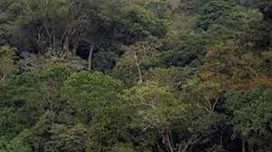

Uganda has both national forests and plantated forests that act as Tourists attraction to both local and foreign Tourists due to their rich
biodiversity, unique wildlife and stunning landscapes
Mabira Forest
Welcome come to ug's rainfall forest
The forest is located along Kampala - Jinja highway in Buikwe district, it one of tje largest forests in the country covering approximately 300 square kilometers
Being the top eco-tourism dstination known for it diverse wildlife adventure activities. The home to uganda mangabey a rare monkey species
almost found in only uganda
it allows activities such
Camping and Picnics
Butterfly and insect viewing
primates watching

Budogo forests
Welcome to the home of Chimpanzee
The forest is located in Masindiwestern uganda and one of the largest Natural forest Covering of about 825 square
kilometers. The forest is rich in biodiversity of over 465 species as well as composed of
Mahogany trees
The Major Tourists activities
Bird watching
Chimpanzee tracking
Education reseach trips
Bwind Impenetrable Forest
Welcome to the home of World's mountaian Gorillas
Bwindi forest is located in southwestern Uganda in districts like kisoro,Kanungu. It
covers approximately 331 square kilometers on the edge of Albertine RiftValley
The forest contains about half of the world's Mt.gorillas, Olive baboons,bush pigs, over 200 Butterfly species
. It acts as a major water for surrounding regions as will as to the multiple rivers that flow into
L.Edward, K.Bunyonyi.